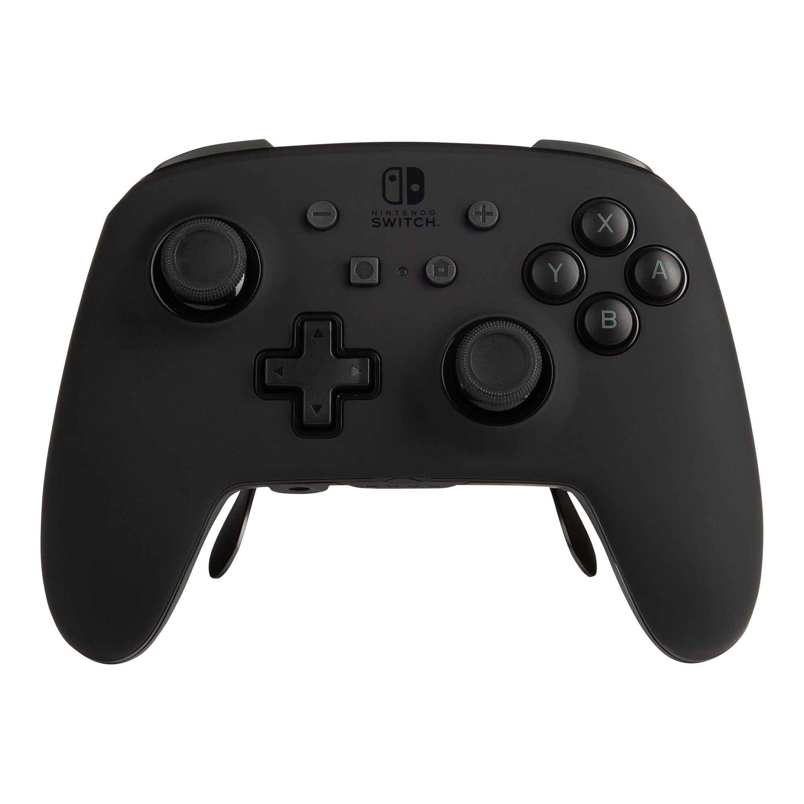

A (Very) Short Introduction
A Collection of Different Controllers
Ever since Atari invented the first modern iteration of video game controllers in the late 70's, there has been quite the rapid development of game controllers and the technologies and the features within them. Video game controllers stemmed from the humble Joystick and button over 4 decades ago, to advanced pieces of handheld tech with a plethora of features, buttons, and joysticks as we know today. This website will cover information on some of the most prominent controllers of the past 5 decades, from the arguably 4 biggest players in the video game industry: Atari, Nintendo, PlayStation, and Xbox.